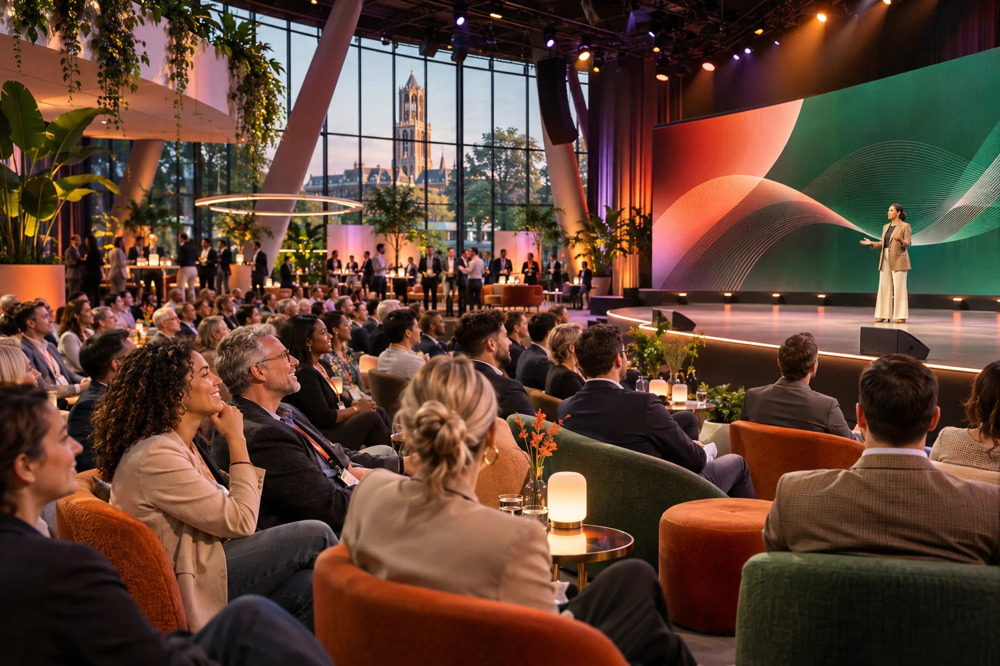

Ideas into actionFuture
Forward
Forward
12MRT
2027
2027
Fictieve voorbeeldcase · Alleen op uitnodiging
Vrijdag 12 maart 2027
Vandaag denken. Morgen doen.
Een energieke summit voor Northstar Labs met scherpe keynotes, interactieve labs en ontmoetingen die nieuwe ideeën meteen in beweging brengen.
Tijd09:30–18:00
LocatieRijn Paviljoen, Utrecht
DresscodeBusiness relaxed
De dag in het kort
- Koffie, check-in & opening
- Keynotes & interactieve labs
- Demo finale & netwerkborrel
Persoonlijke uitnodigingBekijk en beheer jouw deelname